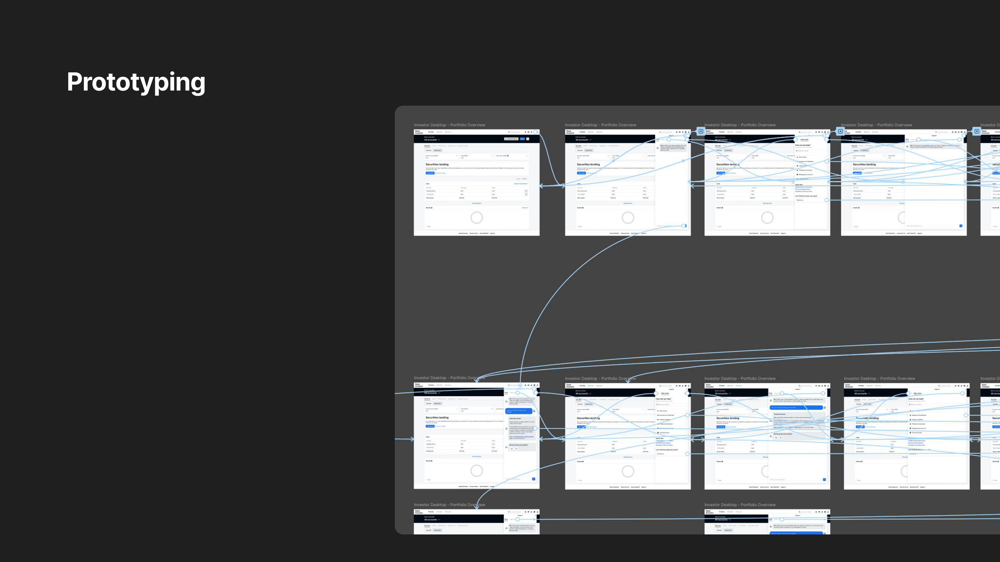

A new chatbot brain had arrived. The business wanted it everywhere — fast.
Saxo Bank had just upgraded its AI chatbot engine. The directive from leadership was clear: make it the default support channel across all platforms. There was also a more radical idea on the table — remove all other help options entirely and go chatbot-only.
Before I touched a single frame, I needed to test that assumption. In a financial context, where a wrong answer or a dead end can mean real money lost, I wasn't going to recommend removing safety nets without evidence.
Two platforms, two different help experiences — both broken in different ways
Saxo Investor used a full help page that felt spacious but abandoned users the moment they navigated away. Saxo TraderGO used a persistent modal that was always there but cramped, stateless, and required users to start over every session.
Mobile inherited the modal pattern wholesale — same hierarchy, same problems, just smaller.
- Help pages broke context — users left their workflow to get help, and couldn't easily return
- The modal had no state persistence — minimizing it meant losing your conversation
- Two inconsistent entry points across platforms created confusion for users on multiple products
- The "Chat with us" button was prominently placed but led to an experience users didn't trust yet
Management wanted chatbot-only. I needed to find out whether that was actually what users wanted — or whether we'd be removing something they still relied on.
Week one was entirely research. No wireframes until we knew what we were solving.
With only three weeks total, it would have been easy to jump straight into design. Instead I spent the entire first week understanding the problem space — through three parallel streams running simultaneously.
01 User interviews — 12 sessions, testing the chatbot-only assumption
I ran structured interviews with 12 active users across both Saxo Investor and TraderGO. The recruitment was intentionally mixed — newer users who might lean on help more, and experienced traders who'd been on the platform for years and had existing habits.
Every interview was built around the same five questions, designed to surface real behaviour rather than stated preferences:
- When you need help, what do you do first — and why that channel specifically?
- When would you choose chat — and when would you actively avoid it?
- What makes a help solution feel reliable in a financial context?
- If chat doesn't solve your issue, what do you expect to happen next?
- What does "resolved" actually feel like to you — how do you know the issue is closed?
Support behaviour split clearly across three groups: users who went straight to chat for quick questions, users who preferred to find an article and self-serve, and users who wanted a human for anything involving money movement. No single channel dominated — and several users said they'd lose trust in the platform entirely if chatbot was the only option.
02 UX audit — two platforms, documented side by side
I audited the existing help experience across Saxo Investor (desktop), TraderGO (desktop), and both on mobile — mapping every entry point, interaction state, and context break against the same set of criteria.
- Investor (desktop) — full-page help centre. Spacious and well-organised, but navigating to it meant leaving the product entirely. Users lost their place and had no way back to what they were doing.
- TraderGO (desktop) — persistent modal in the corner. Always accessible, but cramped, stateless, and reset on every session. Power users had learned to ignore it.
- Mobile (both) — identical to the TraderGO modal pattern. Same hierarchy, same problems, just on a smaller screen with less tolerance for friction.
The problem wasn't the content of the help experience — the articles were good and the chatbot was capable. The problem was access and context. Users were getting lost or giving up before they even reached the help they needed.
03 Competitive analysis — every comparable platform offered more than a chatbot
I reviewed how other platforms in the fintech and SaaS space structured their support — specifically Intercom and Binance, which had both invested heavily in AI support tooling while maintaining multi-channel help.
Both used a floating chat interface that co-existed with a searchable help centre, quick links, and a clear escalation path to human support. Neither had gone chatbot-only. Both had CSAT scores that were publicly cited.
The competitive sweep reinforced what interviews had shown: the industry consensus pointed toward AI as the primary channel, not the exclusive one. Presenting this alongside the user data made the case to stakeholders without friction.
All three streams pointed to the same place: unify the fragmented experience, make the chatbot prominent and easy to reach, but keep the help centre and escalation path intact. The solution direction was clear before the first wireframe was drawn.
Three weeks. One sprint. Discover, define, deliver.
Stakeholder interviews, UX audit across Investor and TraderGO, competitive analysis, and desk research on self-help behaviour in financial products. The goal was to surface the real problem — not just execute the brief as given.
I ran a mini workshop with the team to translate research findings into design requirements: preserve task context, reduce access friction, stay within the design system, maintain support optionality, and enable future scalability. Low-fidelity wireframes followed, with in-house testing for early alignment.
Built an interactive prototype and tested with 8 participants in a guerrilla format. Validated the tab separation, chat-first presentation, and state persistence behaviour. Then went straight to high-fidelity across all three platforms and handed off with full specs, annotations, and design system documentation.

UX audit — Saxo Investor desktop vs TraderGO modal

Wireframe explorations — week 2

Interactive prototype — guerrilla testing
One unified modal. Built for real use across all three platforms.
Instead of maintaining two broken help experiences, I unified them into a single modal pattern that works consistently across Investor, TraderGO, and mobile. The modal opens chat-first — putting the new AI chatbot front and centre — but keeps the help centre one tap away via a persistent tab.
Three states were designed and handed off: the default chat view, the help centre view with article browsing and search, and an expanded view for reading longer articles without losing context. The modal is resizable and minimisable, with full state persistence — users can collapse it mid-conversation and pick up exactly where they left off.
- Chat-first tab exposure increases chatbot visibility without forcing behaviour change
- Help centre remains accessible — respecting the diversity of support preferences found in research
- Context is never broken — the modal stays within the platform instead of redirecting externally
- One template supports all three platforms — Investor, TraderGO, and mobile

Final hi-fi designs — all states across Investor, TraderGO and mobile
More conversations. Fewer support calls. Users helping themselves.
Within the first month post-launch, chatbot engagement increased significantly. Rather than cannibalising other support channels, the redesign grew the total volume of self-service — more users were getting answers without needing to escalate to a human agent.
What I pushed back on — and what I'd do differently
The most important design decision on this project happened before I opened Figma: resisting the chatbot-only brief. Research gave me the evidence to push back, and the team was receptive. That conversation early on shaped everything that followed — and the results validated it.
What I'd do differently: the usability testing didn't validate long-term behaviour change. We knew users understood the new interface and were willing to try the chatbot. We didn't know whether they'd keep choosing it over time, or how well it resolved genuinely complex issues. I'd build in a follow-up research checkpoint at 60 days post-launch to close that gap.
I'd also push earlier for clearer success metrics shared across design, product, and customer support — we aligned on them late, which made the post-launch story harder to tell internally.